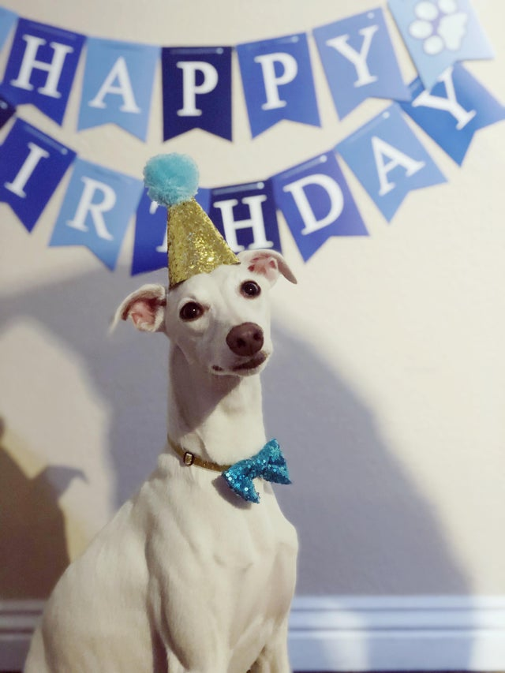
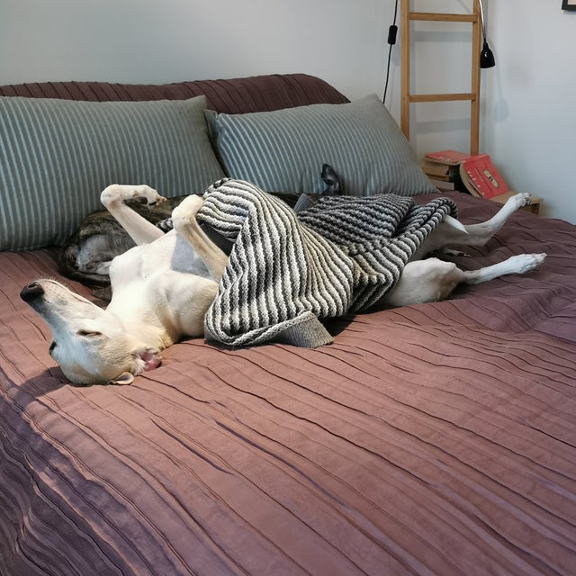
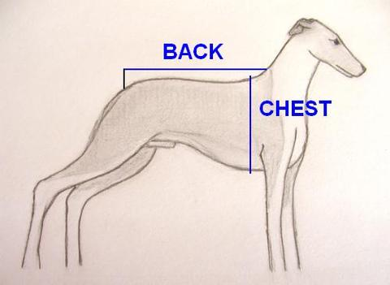
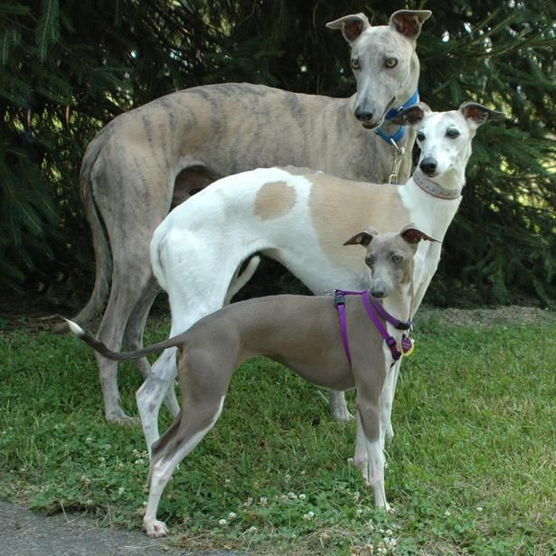

Is it a whippet? A definitive guide

Introduction
The whippet is a dog breed of medium size. The name is derived from an early 17th-century word, meaning "to move briskly".
Do whippets really move briskly?
Only occasionally.
Here is a stationary whippet:

Here is a whippet that moves slowly, and to a very small extent:
This whippet moves rather quickly, but not entirely on their own:
We could say that whippets move at a speed in an appropriate response to their surroundings.
Defining features
| Weight | 20–42 pounds | ||
|---|---|---|---|
| Coat | Fine, dense, short | ||
| Colour | Any except merle | ||
| Life span | 12–14 years | ||

Special abilities
Trick jumping
Whippets can jump, then spread themselves flat in the air, fold back up, and finally land safely at the same spot:

No one knows how they have learned to do this, and what advantages it may give them.
Excellent sight
Whippets, being sighthounds, have an impressive ability to see each other across a large distance. This whippet is exchanging glances with another whippet on the other side of an expansive valley:

Preferred environment
Whippets are diurnal, but they spend their days much like nocturnal animals, which in conjunction makes them very well adapted to indoor environments.
Here is a whippet in their preferred environment:

Comparison with greyhounds
Whippets are slightly smaller than greyhounds.
A young greyhound could be mistaken for a whippet, just like a young whippet could be mistaken for an even younger greyhound.

Comparison with other dogs
Since all dogs are good, there is generally no need for comparisons between them.
Summary
Whippets are beautiful animals, but the complexity of their behaviour is only partially understood. Since they aren't all the same - and are in fact all different - it is worth to engage in conversations with caretakers of whippets. It is best to ask the animal's caretaker. "Is it a whippet?" is frequently a great conversation starter.